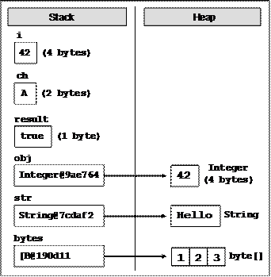
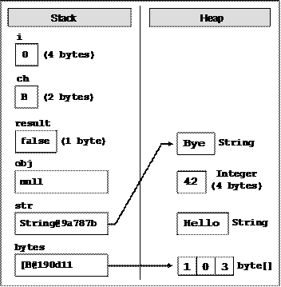

Глава 2. Примитивни типове и променливи
Автор
Христо Тодоров
Светлин Наков
В тази тема...
В настоящата тема ще разгледаме примитивните типове и променливи в Java - какво представляват и как се работи с тях. Първо ще се спрем на типовете данни – целочислени типове, реални типове с плаваща запетая, булев тип, символен тип, обектен тип и стрингов тип. Ще продължим с това какво е променлива, какви са нейните характеристики, как се декларира, как се присвоява стойност и какво е инициализация на променлива. Ще се запознаем и с другото наименование на променливата, а по-точно – "идентификатор". Към края на главата ще се спрем на литералите. Ще разберем какво представляват, какви видове са и на последно място ще срещнем упражнения приготвени за нас читателите, чиято цел е да затвърдим знанията, които ще придобием прочитайки главата.
Какво е променлива?
Една типична програма използва различни стойности, които се променят по време на нейното изпълнение. Например, създаваме програма, която извършва пресмятания. Стойностите, въведени от един потребител, ще бъдат очевидно различни от тези, въведени от друг потребител. Това означава, че когато създаваме програмата, ние не знаем всички възможни стойности, които ще бъдат въведени в нея. Това от своя страна изисква да можем да обработим стойностите, които потребителите евентуално биха въвели.
Нека създадем програма, чиято цел е да извършва пресмятания. Когато потребителят въведе нова стойност, която ще участва в процеса на пресмятане, ние можем я да съхраним (временно) в паметта на нашия компютър. Стойностите в тази част на паметта се променят регулярно. Това е довело до наименованието им – променливи.
Типове данни
Тип данни представлява съвкупност от стойности, които имат еднакви ха–рактеристики.
Характеристики
Типовете данни се характеризират с:
- Име;
- Размер (колко памет заемат);
- Стойност по подразбиране (default value).
Видове
Типовете данни се разделят на следните видове:
- Целочислени типове – byte, short, int, long;
- Реални типове с плаваща запетая – float и double;
- Булев тип – boolean;
- Символен тип – char;
- Обектен тип – Object;
- Символни низове – String.
В следната таблица можем да видим изброените по-горе типове данни (byte, short, int, long, float, double, boolean, char, Object и String), включително стойностите им по подразбиране и техния обхват:
|
Тип данни |
Стойност по подразбиране |
Минимална стойност |
Максимална стойност |
|
byte |
0 |
-128 |
+127 |
|
short |
0 |
-32768 |
+32767 |
|
int |
0 |
-2147483648 |
+2147483647 |
|
long |
0L |
-9223372036854775808 |
+9223372036854775807 |
|
float |
0.0f |
-3.4Е+38 |
+3.4Е+38 |
|
double |
0.0d |
-1.7Е+308 |
+1.7Е+308 |
|
boolean |
false |
Възможните стойности са две – true или false |
|
|
char |
'\u0000' |
0 |
+65535 |
|
Object |
null |
|
|
|
String |
null |
|
|
Типовете byte, short, int, long, float, double, boolean и char се наричат примитивни типове данни, тъй като са вградени в езика Java на най-ниско ниво.
Типовете Object и String са изписани с главна буква, тъй като са сложни типове (не са примитивни). Те представляват класове, които са дефинирани чрез средствата на езика Java, а не са част от него самия, а са част от стандартните библиотеки на Java.
Целочислени типове
Целочислените типове отразяват целите числа и биват – byte, short, int и long. Нека ги разгледаме един по един в реда, в който ги изброихме.
Първи в нашия списък е целочисленият тип byte. Той е 8-битов знаков тип, което означава, че броят на възможните стойности е 2 на степен 8, т.е. 256 възможни положителни и отрицателни стойности общо. Стой–ността по подразбиране е числото 0. Минималната стойност, която заема, е -128, а максималната +127.
Вторият по ред в нашия списък е целочисленият тип short. Той е 16-битов знаков тип. В параграфа за типа byte по-горе изяснихме какво означава знаков тип и какво значение отдава броят на битовите. Стойността по подразбиране е числото 0. Минималната стойност, която заема е числото -32768, а максималната - +32767.
Следващият целочислен тип, който ще разгледаме е типът int. Той е 32- битов целочислен знаков тип. Както виждаме, с нарастването на битовете нарастват и възможните стойности, които даден тип може да заема. Стойността по подразбиране е числото 0. Минималната стойност, която заема е -2 147 483 648, а максималната +2 147 483 647.
Последният целочислен тип, който ни предстои да разгледаме, е типът long. Той е 64-битово цяло число със знак със стойност по подразбиране 0L. Знакът L се указва, че числото е от тип long (иначе се подразбира int). Минималната стойност, която типът long заема, е -9 223 372 036 854 775 808, а максималната +9 223 372 036 854 775 807.
|
|
Когато можем да използваме типът byte вместо типа int или long, не се колебайте да използвате byte. Това ще спести от заеманата в компютъра памет. |
Целочислени типове – пример
Нека разгледаме един пример, в който декларираме няколко променливи от познатите ни целочислени типове, инициализираме ги и ги отпечатваме на конзолата. Какво представлява деклариране и инициализация на променлива, можем да прочетем по-долу в секциите, наименувани "Деклариране на променливи" и "Инициализация на променливи".
|
// Declare some variables byte centuries = 20; short years = 2000; int days = 730480; long hours = 17531520; // Print the result on the console System.out.println(centuries + " centuries is " + years + " years, or " + days + " days, or " + hours + " hours."); |
В разгледания по-горе пример демонстрираме използването на целочислените типове. За малки числа използваме типът byte, а за много големи – целочисленият тип long.
Нека видим резултата от горния фрагмент код отдолу.
|
20 centuries is 2000 years, or 730480 days, or 17531520 hours. |
Реални типове с плаваща запетая
Реалните типове с плаваща запетая представляват реалните числа, които познаваме, и биват – float и double. Нека подходим както с целочислените типове и да ги разгледаме един след друг, за да разберем какви са разликите между двата типа и защо при изчисления понякога се държат обратно на очакваното.
Първи в нашия списък е 32-битовият реален тип с плаваща запетая float. Стойността по подразбиране е 0.0f или 0.0F (двете са еквиваленти). Символът "f" накрая указва изрично, че числото е от тип float (защото по подразбиране всички реални числа са от тип double). Разглежданият тип има точност от 6 до 9 десетични знака (останалите се губят). Минималната стойност, която може да заема, е -3.4Е+38, а максималната е +3.4Е+38.
Втория реален тип с плаваща запетая, който ще разгледаме, е типът double. Той е 64-битов тип със стойност по подразбиране 0.0d или 0.0D. Разглежданият тип има точност от 15 до 17 десетични знака. Минималната стойност, която представя, е -1.7Е+308, а максималната е +1.7Е+308.
Реални типове – пример
Ето един пример за деклариране променливи от тип число с плаваща запетая и присвояване на стойности за тях:
|
// Declare some variables float floatPI = 3.14f; double doublePI = 3.14; |
Точност на реалните типове
Разгледахме два реални типа – float и double. Освен с броя на възможните стойности, които могат да заемат, се различават и с точността им (броя десетични цифри, които запазват). Първият тип има точност от 6 до 9 знака, а вторият – от 15 до 17 знака.
Точност на реални типове – пример
Нека разгледаме един пример, в който декларираме няколко променливи от познатите ни реални типове, инициализираме ги и ги отпечатваме на конзолата. Целта на примера е да онагледим разликата в точността на двата реални типа – float и double.
|
// Declare some variables float floatPI = 3.141592653589793238f; double doublePI = 3.141592653589793238; // Print the result on the console System.out.println("Float PI is: " + floatPI); System.out.println("Double PI is: " + doublePI); |
Нека видим резултата от горния фрагмент код отдолу, за да ни се изясни какво е това точност при реалните типове:
|
Float PI is: 3.1415927 Double PI is: 3.141592653589793 |
В примера по-горе декларирахме две променливи, една от тип double и една от тип float, инициализираме ги и ги отпечатваме. Виждаме, че числото пи, декларирано от тип float, е закръглено на 7-ми знак, а от тип double – на 15-ти знак. Изводът, който бихме си направили, е че реалният тип double е с доста по-голяма точност и ако ни е необходима голяма точност след десетичния знак, ще използваме него.
За представянето на реалните типове
Реалните числа в Java се представят като числа с плаваща запетая (съгласно стандарта IEEE 754) и се състоят от три компонента: знак (1 или -1), мантиса (значещи цифри) и експонента (скала на отместване), като стойността се изчислява по сложна формула. Мантисата съхранява значещите цифри на числото и има капацитет до 9 десетични цифри при float и до 17 десетични цифри при double. При използване на повече цифри, те се губят и стават нули. Загуба на точност се получава не само при голям брой цифри (както ще видим малко по-късно). Експонентата описва на коя позиция се намира десетичната точка. Благодарение на нея числата с плаваща запетая могат да бъдат много близки до нулата (до 1.4 * 10-45 за типа float) и много големи (до 3.4 * 1038 за типа float), но не всяко число има точно представяне.
Повече за представянето на числата ще научите в главата "Бройни системи".
При представянето на дадено реално число във формата с плаваща запетая много често пъти се губи точност, най-малкото, защото всички реални числа са безкрайно много, а всички числа, които могат да се представят в краен брой битове (32 или 64) са краен брой. Например числото 0.1 (една десета) няма точно представяне като число с плаваща запетая (т.е. в типовете float и double) и се представя приблизително.
|
|
Не всички реални числа имат точно представяне в типовете float и double! Например числото 0.1 се представя закръглено в типа float като 0.099999994. |
За съжаление в Java няма примитивен тип данни, който съхранява реални числа с фиксирана запетая (при които няма такава загуба на точност).
Грешки при пресмятания с реални типове
При пресмятания с реални типове данни може да наблюдаваме странно поведение. Причината за това е невъзможността някои реални числа да се представят точно в двоичен вид. Примери за такива числа са 1/3, 2/7 и други.
Грешки при пресмятания с реални типове – пример
Нека разгледаме един пример, в който декларираме няколко променливи от познатите ни реални типове, инициализираме ги, сравняваме ги и отпечатваме резултата на конзолата. Дали двете променливи имат еднаква стойност, ще видим, ако погледнем по-долу:
|
// Declare some variables float sum = 0.1f + 0.1f + 0.1f + 0.1f + 0.1f + 0.1f + 0.1f + 0.1f + 0.1f + 0.1f; float num = 1.0f; // Is sum equal to num boolean equal = (num == sum); // Print the result ot the console System.out.println("num = " + num + " sum = " + sum + " equal = " + equal); |
Нека видим резултата от горния фрагмент код отдолу.
|
num = 1.0 sum = 1.0000001 equal = false |
От примера можем да заключим, че сумирането на 0.1f десет пъти не е равно на числото 1.0f. Причината за това е, че числото 0.1f е всъщност закръглено до 0.099999994f при записването му в тип float. Знакът f, както вече обяснихме, задава стойност (литерал) от тип float и за него можем да прочетем повече в секцията "Реални литерали".
Булев тип
Булевия тип се декларира с ключовата дума boolean. Има две стойности, които може да приема – true и false. Стойността по подразбиране е false. Използва се най-често в логически изрази.
Булев тип – пример
Нека разгледаме един пример, в който декларираме няколко променливи от познатите ни типове, инициализираме ги, сравняваме ги и отпечатваме резултата на конзолата. Дали двете променливи имат еднаква стойност ще видим, ако погледнем по-долу:
|
// Declare some variables int a = 1; int b = 2; // Which one is greater? boolean greaterAB = (a > b); // Is it equal to 1? boolean equalA1 = (a == 1); // Print the result on the console if (greaterAB) { System.out.println("A > B"); } else { System.out.println("A <= B"); } System.out.println("greaterAB = " + greaterAB); System.out.println("equalA1 = " + equalA1); |
Нека видим резултата от горния фрагмент код:
|
A <= B greaterAB = false equalA1 = true |
В примера декларираме две променливи от тип int, сравняваме ги и резултата го присвояваме на променливата от булев тип greaterAB. Аналогично за променливата equalA1. Ако променливата greaterAB е true, на конзолата се отпечатва А > B, в противен случай B > A.
Символен тип
Символният тип представя символна информация. Декларира се с ключовата дума char. На всеки символ отговаря цяло число. За да илюстрираме казаното за символния тип, нека разгледаме примерите по-долу.
Символен тип – пример
Нека разгледаме един пример, в който декларираме една променлива от тип char, инициализираме я със стойност 'a', 'b' и 'A' и респективно отпечатваме резултата на конзолата:
|
// Declare a variable char symbol = 'a'; // Print the result ot the console System.out.println( "The code of '" + symbol + "' is: " + (int) symbol); symbol = 'b'; System.out.println( "The code of '" + symbol + "' is: " + (int) symbol); symbol = 'A'; System.out.println( "The code of '" + symbol + "' is: " + (int) symbol); |
Нека видим резултата от горния фрагмент код отдолу:
|
The code of 'a' is: 97 The code of 'b' is: 98 The code of 'A' is: 65 |
Символни низове (стрингове)
Символните низове отразяват поредица от символи. Декларира се с ключовата дума String. Стойността по подразбиране е null. Стринговете се ограждат в двойни кавички, могат да се конкатенират (долепват един до друг), разделят и други. За повече информация можем да прочетем глава 12 "Символни низове", в която детайлно е обяснено какво е това стринг, за какво служи и как да го използваме.
Символни низове – пример
Нека разгледаме един пример, в който декларираме няколко променливи от познатия ни символен тип, инициализираме ги и ги отпечатваме на конзолата:
|
// Declare some variables String firstName = "Ivan"; String lastName = "Ivanov"; String fullName = firstName + " " + lastName; // Print the result ot the console System.out.println("Hello, " + firstName + "!"); System.out.println("Your full name is " + fullName + "."); |
Да видим резултата от горния фрагмент код:
|
Hello, Ivan! Your full name is Ivan Ivanov. |
Обектен тип
Обектният тип е специален тип, който се явява родител на всички други типове. Декларира се с ключовата дума Object и може да приема стойности от всеки друг тип.
Използване на обекти – пример
Нека разгледаме един пример, в който декларираме няколко променливи от познатия ни обектен тип, инициализираме ги и ги отпечатваме на конзолата:
|
// Declare variables Object container = 5; Object container2 = "Five"; // Print the result ot the console System.out.println("The value of container is: " + container); System.out.println("The value of container2 is: " + container2); |
Нека видим резултата от горния фрагмент код:
|
The value of container is: 5 The value of container2 is: Five. |
Променливи
След като разгледахме основните типове данни в Java, нека видим как и за какво можем да ги използваме. За да работим с данни, трябва да използваме променливи.
Променливата е контейнер на информация, който може да променя стойността си. Тя осигурява възможност за:
- Запазване на информация;
- Извличане на запазената там информация;
- Модифициране на запазената там информация.
Характеристики на променливите
Променливите се характеризират с:
- Име;
- Тип (на запазената в тях информация);
- Стойност (запазената информация).
Именуване на променлива – правила
Когато искаме компилаторът да задели област в паметта за някаква информация, използвана в програмата ни, трябва да зададем име, което служи като идентификатор и позволява да се реферира нужната ни област от паметта.
Името може да бъде всякакво по наш избор, но трябва да следва определени правила:
- Имената на променливите се образуват от буквите a-z, A-Z, цифрите 0-9, както и символите $ и _. По принцип е допустимо да се ползват и букви от кирилицата, но това трябва да се избягва.
- Имената на променливите не може да започват с цифра.
- Имената на променливите не могат да съвпадат със служебна дума (keyword) от езика Java:
|
abstract |
default |
if |
private |
this |
|
boolean |
do |
implements |
protected |
throw |
|
break |
double |
import |
public |
throws |
|
byte |
else |
instanceof |
return |
transient |
|
case |
enum |
int |
short |
try |
|
catch |
extends |
interface |
static |
void |
|
char |
final |
long |
strictfp |
validate |
|
class |
finally |
native |
super |
while |
|
const |
float |
new |
switch |
|
|
continue |
for |
package |
synchronized |
|
Именуване на променливи - примери
Правилно име:
- name
- first_Name
- _name1
Неправилно име (ще доведе до грешка при компилация):
- 1 (цифра)
- if (служебна дума)
- 1name (започва с цифра)
Именуване на променливи – препоръки
Ще дадем някои препоръки за именуване, тъй като не всички позволени от компилатора имена са подходящи за нашите променливи.
- Имената трябва да са описателни – да обясняват за какво служи дадената променлива. Примерно за име на човек подходящо име е personName, а неподходящо име е a37.
- Трябва да се използват само латински букви.
- В Java e прието променливите да започват винаги с малка буква и всяка следваща дума да започва с главна буква. Примерно: firstName, a не firstname или first_name.
- Името трябва да не е нито много дълго, нито много късо.
- Трябва да се внимава за главни и малки букви, тъй като Java прави разлика между тях.
Ето няколко примера за добре именувани променливи:
- firstName
- age
- startIndex
- lastNegativeNumberIndex
Ето няколко примера за лошо именувани променливи (макар и имената да са коректни от гледана точка на компилатора на Java):
- _firstName
- last_name
- AGE
- Start_Index
- lastNegativeNumber_Index
Променливите трябва да имат име, което обяснява накратко за какво служат. Когато една променлива е именувана с неподходящо име, това силно затруднява четенето на програмата и нейното последващо променяне (след време, когато сме забравили как работи тя).
|
|
Стремете се винаги да наименувате променливите с кратки, но достатъчно ясни имена, като следвате винаги правилото, че от името на променливата трябва да става ясно за какво се използва. |
Деклариране на променливи
Когато декларираме променлива, ние:
- Задаваме нейния тип;
- Задаваме нейното име (наречено идентификатор);
- Може да дадем начална стойност, но не е задължително.
Ето какъв е синтаксисът за деклариране на променливи:
|
<тип данни><идентификатор> [= <инициализация>] |
Ето няколко примера за деклариране на променливи и задаване на стойностите им:
|
byte centuries = 20; short years = 2000; int days = 730480; long hours = 17531520; float floatPI = 3.141592653589793238f; double doublePI = 3.141592653589793238; boolean isEmpty = true; char symbol = 'a'; String firstName = "Ivan"; |
Присвояване на стойност
Присвояването на стойност на променлива представлява задаване на стойност на същата. Тази операция се извършва от оператора за присвояване "=". От лявата страна на оператора се изписва типа на променливата и нейното име, а от дясната страна – стойността.
Присвояване на стойност – примери
Ето няколко примера за присвояване на стойност на променлива:
|
int firstValue = 5; int secondValue; int thirdValue; // Using an already declared variable: secondValue = firstValue; // The following cascade calling assigns 3 to firstValue and // then firstValue to thirdValue, so both variables have // the value 3 as a result: // Avoid this! thirdValue = firstValue = 3; |
Инициализация на променливи
След като вече се запознахме как се декларира променлива, ще пристъпим към задаване на стойност по време на деклариране. Извършвайки тази операция, ние всъщност инициализираме променливата, задавайки стойност на последната.
Всеки тип данни има стойност по подразбиране (инициализация по подразбиране). В таблицата отдолу може да ги видим.
|
Тип данни |
Стойност по подразбиране |
Тип данни |
Стойност по подразбиране |
|
byte |
0 |
double |
0.0d |
|
short |
0 |
char |
'\u0000' |
|
int |
0 |
String |
null |
|
long |
0L |
boolean |
false |
|
float |
0.0f |
|
|
Инициализация на променливи – примери
Ето един пример за инициализация на променливи:
|
// The following assigns empty String to the variable "name": String name = new String(); // name = "" // This is how we use a literal expression float heightInMeters = 1.74f; // Here we use an already initialized variable String greeting = "Hello World!"; String message = greeting; |
Стойностни и референтни типове
Типовете данни в Java са 2 вида: стойностни и референтни.
Стойностните типове (value types) се съхраняват в стека за изпълнение на програмата и съдържат директно стойността си. Стойностни са примитивните числови типове, символният тип и булевият тип: byte, int, short, long, float, double, char, boolean. Такива променливи заемат 1, 2, 4 или 8 байта в стека. Те се освобождават при излизане от обхват.
Референтните типове (reference types) съхраняват в стека за изпълнение на програмата референция към динамичната памет (т. нар. heap), където се съхранява реалната им стойност. Референцията представлява указател (адрес на клетка от паметта), сочещ реалното местоположение на стойността в динамичната памет. Референцията има тип и може да има като стойност само обекти от своя тип, т.е. тя е типизиран указател. Всички референтни (обектни) типове могат да имат стойност null. Това е специална служебна стойност, която означава, че липсва стойност. Референтните типове заделят динамична памет при създаването си и се освобождават по някое време от системата за почистване на паметта (garbage collector), когато тя установи, че вече не се използват от програмата. Тъй като заделянето и освобождаването на памет е бавна операция, може да се каже, че референтните типове са по-бавни от стойностните.
Референтни типове са всички класове, масивите, изброените типове и интерфейсите, например типовете: Object, String, Integer, byte[]. С обектите, символните низове, масивите и интерфейсите ще се запознаем в следващите глави на книгата. Засега е достатъчно да знаете, че всички типове, които не са стойностни, са референтни и се разполагат в динамичната памет.
Стойностни и референтни типове и паметта
Нека илюстрираме с един пример как се представят в паметта стойностните и референтните типове. Нека е изпълнен следния програмен код:
|
int i = 42; char ch = 'A'; boolean result = true; Object obj = 42; String str = "Hello"; byte[] bytes = {1, 2, 3}; |
В този момент променливите са разположени в паметта по следния начин:

Ако сега изпълним следния код, който променя стойностите на променливите, ще видим какво се случва с паметта при промяна на стойностни и референтни типове:
|
i = 0; ch = 'B'; result = false; obj = null; str = "Bye"; bytes[1] = 0; |
След тези промени променливите и техните стойности са разположени в паметта по следния начин:

Както можете да забележите от фигурата, при промяна на стойностен тип (i=0) се променя директно стойността му в стека.
При промяна на референтен тип се променя директно стойността му в динамичната памет (bytes[1]=0). Променливата, която държи референцията, остава непроменена (B@190d11). При записване на стойност null в референтен тип съответната референция се разкача от стойността си и променливата остава без стойност (obj=null).
При присвояване на нова стойност на обект (референтен тип) новият обект се заделя в динамичната стойност, а старият обект остава свободен. Референцията се пренасочва към новия обект (str="Bye"). Старите обекти, понеже не се използват, ще бъдат почистени по някое време от системата за почистване на паметта (garbage collector).
Литерали
Примитивните типове, с които се запознахме вече, са специални типове данни, вградени в езика Java. Техните стойности, зададени в сорс кода на програмата се наричат литерали. С един пример ще ни стане по-ясно:
|
boolean result = true; char capitalC = 'C'; byte b = 100; short s = 20000; int i = 300000; |
В примера литерали са true, 'C', 100, 20000 и 300000. Те представляват стойности на променливи, зададени непосредствено в сорс кода на програмата.
Видове литерали
Съществуват няколко вида литерали:
- Boolean
- Integer
- Real
- Character
- String
- The null literal
Булеви литерали
Булевите литерали са:
- true
- false
Когато присвояваме стойност на променлива от тип boolean, можем да използваме единствено някоя от тези две стойности.
Булеви литерали – пример
Ето пример за декларация на променлива от тип boolean и присвояване на стойност, което представлява булевият литерал true:
|
boolean result = true; |
Целочислени литерали
Целочислените литерали представляват поредица от цифри, наставки и представки. Можем да представим целите числа в сорс кода на програмата в десетичен, шестнадесетичен и осмичен формат.
- "0" представка означава стойност в осмична бройна система, например 007;
- "0x" и "0X" представки означават шестнадесетична стойност, например 0xA8F1;
- "l" и "L" наставки означават данни от тип long, например 357L.
Символът "l" лесно се бърка с 1 (едно), затова препоръчително е да използваме символа "L".
Целочислени литерали – примери
Ето няколко примера за използване на целочислени литерали:
|
// The following variables are initialized with the same value int numberInDec = 16; int numberInOcatal = 020; int numberInHex = 0x10;
// This will cause an error, because the value 234L is not int int longInt = 234L; |
Реални литерали
Реалните литерали, както целочислените, представляват поредица от цифри, знак (+, -), наставки и символа за десетична запетая. Използваме ги за стойности от тип float и double. Реалните литерали могат да бъдат представени и в експоненциален формат.
- "f" и "F" наставки означават данни от тип float;
- "d" и "D" наставки означават данни от тип double;
- "e" означава експонента, примерно "e-5" означава цялата част да се умножи по 10-5.
- По подразбиране реалните литерали са от тип double.
Реални литерали – примери
Ето няколко примера за използване на реални литерали:
|
// The following is the correct way of assigning the value: float realNumber = 12.5f;
// This is the same value in exponential format: realNumber = 1.25e+1f;
// The following causes an error because 12.5 is double float realNumber = 12.5; |
Символни литерали
Символните литерали представляват единичен символ, ограден в апострофи (единични кавички). Използваме ги за задаване на стойности от тип char.
Стойността на този тип литерали може да бъде:
- Символ, примерно 'A';
- Код на символ, примерно '\u0065';
- Escaping последователност.
Escaping последователности
Понякога се налага да работим със символи, които не са изписани на клавиатурата или със символи, които имат специално значение, като например символът "нов ред". Те не могат да се изпишат директно в сорс кода на програмата и за да ги ползваме са ни необходими специални техники, които ще разгледаме сега.
Escaping последователностите са литерали, които представят последователност от специални символи, които задават символ, който по някаква причина не може да се изпише директно в сорс кода. Такъв е например символът за нов ред. Те ни дават заобиколен начин (escaping) да напишем някакъв символ.
Примери за символи, които не могат да се изпишат директно в сорс кода, има много: двойната кавичка, табулация, нов ред, наклонена черта и други. Ето някои най-често използваните escaping последователности:
- \' – единична кавичка
- \" – двойна кавичка
- \\ – лява наклонена черта
- \n – нов ред
- \t – отместване (табулация)
- \uXXXX – силвол, зададен с Unicode номера си, примерно \u03A7.
Символът \ (лява наклонена черта) се нарича още екраниращ символ, защото той позволява да се изпишат на екрана символи, които имат специално значение или действие и не могат да се изпишат в сорс кода.
Escaping последователности – примери
Ето няколко примера за символни литерали:
|
// An ordinary symbol char symbol = 'a'; System.out.print(symbol);
// Unicode symbol code in a hexadecimal format symbol = '\u003A'; System.out.print(symbol);
// Assigning the single quote symbol symbol = '\''; System.out.print(symbol);
// Assigning the backslash symbol symbol = '\\'; System.out.print(symbol); |
Ако изпълним горния код, ще получим следния резултат:
|
a:'\ |
Литерали за символен низ
Литералите за символен низ се използват за данни от тип String. Състоят се от текстова стойност, заградена в двойни кавички и представляват последователност от символи.
За символните низове важат всички правила за escaping, които важат и за литералите от тип char.
Литерали за символен низ – примери
Ето няколко примера за използване на литерали от тип символен низ:
|
String quotation = "\"Hello, Jude\", he said."; System.out.println(quotation); String path = "C:\\Windows\\Notepad.exe"; System.out.println(path); |
Ако изпълним горния код, ще получим следния резултат:
|
"Hello, Jude", he said. C:\Windows\Notepad.exe |
Повече за символните низове ще намерите в главата "Символни низове".
Упражнения
1. Декларирайте няколко променливи, като изберете за всяка една най-подходящия от типовете byte, short, int и long, за да представят следните стойности: 52130; -115; 4825932; 97; -10000.
2. Кои от следните стойности може да се присвоят на променлива от тип float и кои на променлива от тип double: 34.567839023; 12.345; 8923.1234857; 3456.091?
3. Инициализирайте променлива от тип int със стойност 256 в шестнадесетичен формат (256 е 100 в бройна система с база 16).
4. Декларирайте променлива isMale от тип boolean и присвоете стойност на последната в зависимост от вашия пол.
5. Декларирайте две променливи от тип String със стойности "Hello" и "World". Декларирайте променлива от тип Object. Присвоете на тази променлива стойността, която се получава от конкатенацията на двете стрингови променливи (добавете интервал, ако е необходимо). Отпечатайте променливата от тип Object. Декларирайте променлива от тип String и присвоете на последната променливата от тип Object.
6. Декларирайте променлива от тип String, отпечатайте я на конзолата и получете следното "The "use" of quotations causes difficulties." (без първите и последни кавички).
7. Напишете програма, която принтира на конзолата равнобедрен триъгълник, като страните му са очертани от символа звездичка "*".
8. Напишете програма, която принтира фигура във формата на сърце със знака "o".
9. Фирма, занимаваща се с маркетинг, иска да пази запис с данни на нейните служители. Всеки запис трябва да има следната характеристика – първо име, фамилия, възраст, пол (м или ж), ID номер и уникален номер на служителя (27560000 до 27569999). Декларирайте необходимите променливи, нужни за да се запази информацията за един служител, като използвате подходящи типове данни и описателни имена.
10. Декларирайте две променливи от тип int. Задайте им стойности съответно 5 и 10. Разменете стойностите им и ги отпечатайте.
Решения и упътвания
1. Погледнете размерността на числените типове.
2. Имайте в предвид броят символи след десетичния знак. Направете справка в таблицата с размерите на типовете float и double.
3. Вижте секцията за целочислени литерали.
4. Вижте секцията за булеви променливи.
5. Вижте секциите за символен тип и за обектен тип данни.
6. Погледнете частта за символни литерали. Необходимо е да използвате символа за escaping – наклонена черта "\".
7. Използвайте System.out.println().
8. Използвайте System.out.println().
9. За низовете използвайте тип String, за пол използвайте тип char (имаме само един символ м/ж), а за ID номера използваме целочислен тип int.
10. Използвайте трета временна променлива.